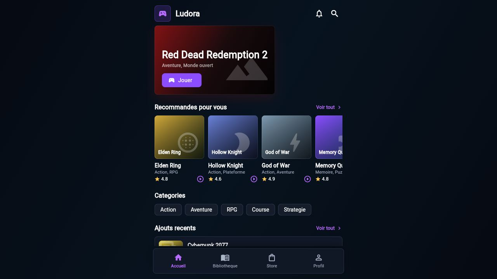

Ludora Football
Match rapide 2D/3D, IA, passes, tirs, pressing, tactiques, tournoi et camera dynamique.
5v5TactiqueTournoi
Une banque de jeux premium pour jouer, progresser, defier tes amis et construire une vraie communaute autour de mini-jeux rapides et Ludora Football.
L'app Android combine compte Supabase, sauvegarde locale, classement mondial, succes, notifications, modules sociaux, boutique et centre tournoi.

Chaque jeu est branche comme un module avec score, duree, recompenses, missions et synchronisation.
Match rapide 2D/3D, IA, passes, tirs, pressing, tactiques, tournoi et camera dynamique.
Snake Arena, Pong Duel, Tetris Blocks, Reflex Rush, Runner Dash et Space Shooter.
Echecs Duel, Ludo Rush, Awale Africain, Quiz Clash, Memory Quest et 2048 Neon.
Car racing, moto racing, nitro, drift, obstacles, reparations et progression arcade.
Invitations, salons Tic Tac Toe, joueurs connectes, classement global et file offline-first.
Missions quotidiennes, roue, coffres, VIP, skins, securite, IA, live et personnalisation.
Le MVP actuel pose une base jouable : terrain reduit, joystick, boutons action, tirs orientes, gardiens, fautes simples, tactiques, meteo, mini-carte, 2D et 3D.
Stabiliser le multijoueur amis, ajouter rooms football, synchroniser les matchs, puis preparer une passerelle Unity/Flutter pour un futur gameplay 3D plus lourd.
Lire le plan footballUn chemin simple : stabiliser, connecter, enrichir, publier.
Modules actifs, inscription email, SQL Supabase complet, site officiel et APK test.
Salons amis plus visibles, historique social, missions quotidiennes et classement temps reel.
Ludora Football online, invitations match, tournoi joueur et statistiques avancees.
Backend scalable, plugins de jeux, analytics, boutique distante et preparation store.
Un espace pour montrer que Ludora avance vraiment, version apres version.
Chaque action cree maintenant un historique visible, une recompense et une synchronisation.
Le jeu phare gagne une interface unique, des tactiques et un plan online progressif.
Les nouvelles tables activent les modules, les scores, les salons et la synchronisation.